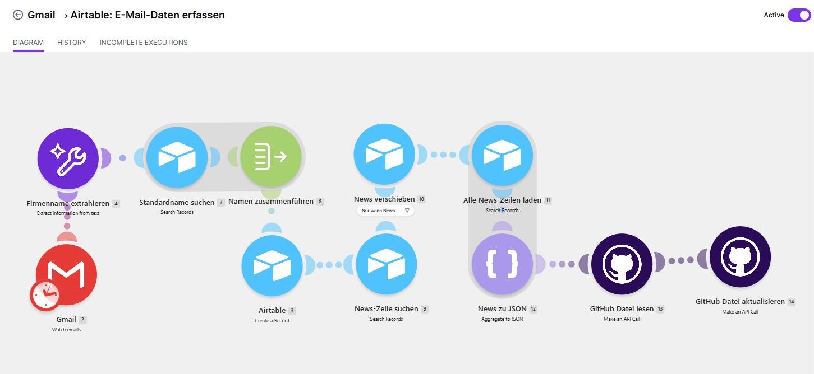

Journalisten kennen die Situation zur Genüge: Im Tagesgeschäft will man nichts verpassen, alle Quellen im Blick behalten und immer auf dem neuesten Stand sein. Ganz ähnlich ergeht es Investoren an der Börse. Statt eines Themengebiets sind es aber hier die Unternehmen, bei denen man auf dem Laufenden bleiben möchte. Sei es, um schnell reagieren zu können oder einfach, um Entwicklungen nicht zu verpassen. Dabei haben beide Gruppen das gleiche Problem. Manche Teilbereiche der Quellen sind einfach zugänglich, Informationen werden täglich oder sogar stündlich über die Ticker der Medien geschickt. Andere Unternehmen bekommen kaum mediale Aufmerksamkeit.
So ergeht es mir bei meinem kleinen Aktienportfolio: Während ich bei Amazon, Nike oder BASF mit Informationen überschüttet werde, höre ich in Deutschland von Nibe Industrier aus Schweden oder UGI aus den USA herzlich wenig. Portfolios kann man sich kostenlos bei Medien wie dem Handelsblatt oder Onvista anlegen und dort gibt es in der Regel zu allen Positionen einen News-Bereich. Dort zeigt sich aber wieder die bekannte Schwäche. Die Informationsfülle ist abhängig vom medialen Spotlight. Meine erste Lösung: Ein selbst entwickelter Portfolio-Tracker, der spezialisiert auf meine Positionen und auf deren Unternehmensmeldungen Informationen automatisch sammelt. Medienangebote habe ich in den ersten Inkrementen bewusst herausgelassen, um die Umsetzung schlank zu halten. Ich konzentriere mich also auf die Unternehmensinformationen.
RSS, Scraping, Seiten-Tracker - Keep it simple
Als Erstes dachte ich mir, dass ein RSS-Feed meine Bedürfnisse gut abdeckt. Aber kaum mehr ein Unternehmen bietet den Klassiker im Netz an. Browser-Erweiterungen oder das aktive Scraping aller Seiten kam für mich allein wegen des Aufwands und der Abhängigkeit von Drittanbietern nicht in Frage. Was ist also der direkteste Weg vom Unternehmen auf meine Seite? Die Antwort ist einfacher als gedacht. E-Mails. Denn quasi alle Unternehmensmeldungen werden per Mail verschickt oder zumindest angekündigt.
Der Rest schien mir simpel zu sein, Make sollte die Mails bei meinem E-Mail-Anbieter abgreifen, sie in eine Airtable-Tabelle schreiben und diese zeige ich per iFrame auf meiner Seite. Das Problem waren die Namen. Denn welche Mail ist von wem? Während die Extraktion der Inhalte, die Übergabe von Zeit und die Darstellung einfach zu lösen war, war die robuste Zuordnung der Namen das langwierigste Problem. Ein Beispiel: Die “Bank of Nova Scotia” nennt sich selbst auch einfach “Scotiabank”, Mails werden aber auch als Scotia Investors News gekennzeichnet. Dazu kommen besonders kurze Namen wie “UGI” oder Handelsnamen, die sich von Unternehmensnamen unterscheiden. Nachdem die Zuordnung solide aufgestellt war, fehlt die andere Seite, also das Eintragen der Namen in die Tabelle. Dafür musste ich die Namen mit einer Referenznamenstabelle abgleichen, damit nicht ständig neue Unternehmens-Namen-Variationen in meine Tabelle eingetragen werden.

Abhängigkeiten abbauen: Wenn der Datenlauf zusammenbricht
Der Import, die Verarbeitung und nicht zuletzt die Sortierung der Tabellen kosten wie immer Tokens, Daten-Übertragungsmengen und API-Aufrufe. Da ich mittlerweile sowieso einige Automatisierungen über Make gebaut habe, lag es nahe, mir hier einen Core-Account für 10 Euro im Monat zuzulegen. Hier laufe ich also in keine Limitationen mehr hinein. Airtable jedoch bietet mir zu wenig, dass ich hier einen kostenpflichtigen Account anlegen möchte. Das hat jedoch dazu geführt, dass die iFrame-Einbindung nach dem Testzeitraum nicht mehr funktionierte. Der Datenfluss funktioniert also noch, aber ich kann die Tabelle nicht mehr darstellen. Die Daten werden jedoch weiter in Airtable abgelegt. Es bildet also weiterhin die Referenzdatenbank.
Für die Version 0.2 habe ich also mit Codex eine eigene Darstellung auf meiner Webseite erstellt. Make lädt die aufbereiteten Tabellenzeilen, wandelt sie in JSON um und aktualisiert über die GitHub-API eine Datei im Repository meiner Webseite. Das hat auch den Vorteil, dass ich mein eigenes Design bestimmen und beispielsweise Markierungen für die Aktualität setzen kann. Dazu habe ich die Darstellung so gewählt, dass immer nur drei Meldungen pro Unternehmen dargestellt werden. Neue Meldungen schieben somit immer von links nach rechts ältere Meldungen weiter, bis die ältesten herausfallen. Diese Lösung läuft nun schon seit mehr als einem Monat robust und ohne Probleme. Man sieht also: Weniger Abhängigkeiten von Drittanbietern machen ein System nicht nur robuster, sondern bieten häufig mehr Spielraum bei der Umsetzung.